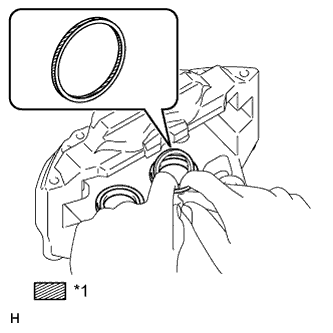
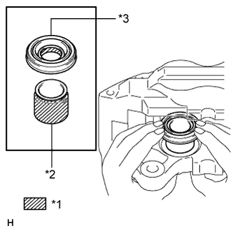

ПЕРЕДНИЙ ТОРМОЗ > ПОВТОРНАЯ СБОРКА |
| 1. ВРЕМЕННО УСТАНОВИТЕ ПРОКАЧНОЙ ШТУЦЕР ПЕРЕДНЕГО ДИСКОВОГО ТОРМОЗА |
Предварительно установите прокачной штуцер переднего дискового тормоза на колесный тормозной цилиндр дискового тормоза в сборе.
Установите колпачок прокачного штуцера переднего дискового тормоза на прокачной штуцер.
| 2. УСТАНОВИТЕ УПЛОТНЕНИЕ ПОРШНЯ |
|  |
Нанесите тонкий слой гликолевой смазки на основе литиевого мыла на всю внутреннюю и всю наружную окружности каждого из 4 новых уплотнений поршней.
| *1 | Гликолевая консистентная смазка на основе литиевого мыла |
Установите 4 уплотнения поршней на цилиндр дискового тормоза.
| 3. УСТАНОВИТЕ ПОРШЕНЬ ПЕРЕДНЕГО ДИСКОВОГО ТОРМОЗА |
|  |
Нанесите тонкий слой гликолевой консистентной смазки на основе литиевого мыла на всю внутреннюю окружность каждого из 4 новых защитных колпачков тормозного цилиндра.
| *1 | Гликолевая консистентная смазка на основе литиевого мыла |
| *2 | Поршень тормозного цилиндра переднего дискового тормоза |
| *3 | Защитный колпачок цилиндра |
Нанесите тонкий слой гликолевой консистентной смазки на основе литиевого мыла на всю наружную окружность каждого из 4 поршней тормозного цилиндра переднего дискового тормоза в зонах контакта с защитными колпачками тормозного цилиндра и колесным тормозным цилиндром переднего дискового тормоза.
Установите 4 защитных колпачка цилиндра на 4 поршня переднего дискового тормоза.
Установите 4 поршня тормозного цилиндра переднего дискового тормоза в колесный тормозной цилиндр переднего дискового тормоза.
| 4. УСТАНОВИТЕ ЗАЩИТНЫЙ КОЛПАЧОК ЦИЛИНДРА |
 |
Установите одну сторону каждого из 4 защитных колпачков тормозного цилиндра на колесный тормозной цилиндр переднего дискового тормоза.
| *1 | Защитный колпачок цилиндра |
| *2 | Установочное кольцо поршня тормозного цилиндра переднего дискового тормоза |
| 5. УСТАНОВИТЕ УСТАНОВОЧНОЕ КОЛЬЦО ПОРШНЯ ЦИЛИНДРА ПЕРЕДНЕГО ДИСКОВОГО ТОРМОЗА |
Установите 4 установочных кольца переднего дискового тормоза.